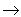

В статье рассказывается о свойствах нового вида радиоактивности атомных ядер - протонного распада основных состояний ядер. Показывается, как протонная радиоактивность связана с границами существования атомных ядер в природе. Демонстрируются возможности современных квантово-механических подходов для описания свойств этого явления.
Введение
Начало восьмидесятых годов обогатило ядерную физику
открытием нового вида радиоактивных превращений атомных ядер. К известным ранее
четырем типам радиоактивности - альфа, бета, гамма-распадам и делению ядер (об
этих и других видах радиоактивности смотри в работах [1-4] ) добавился протонный
распад , при котором родительское ядро , находясь в основном состоянии,
самопроизвольно испускает протон с образованием определенного состояния (не
обязательно основного) дочернего ядра .
Путь к открытию протонной радиоактивности был далеко не
простым. Вначале был обнаружен вылет протонов из высоковозбужденных и поэтому
короткоживущих состояний ядер, заселяемых при бета-распаде или в различных
ядерных реакциях. В 1970 году были зафиксированы протоны, связанные с распадом
изомерного состояния ядра 53mCo27 ( изомерным состоянием
называется такое возбужденное состояние, время жизни ядра в котором достаточно
велико ,чтобы можно было накапливать заметные количества ядер в этом состоянии)
. Для осуществления же протонного распада из основных состояний ядер необходимо
было создать такие ядра, в которых протон не был бы связан с дочерним ядром,
образующимся после вылета протона из родительского ядра, то - есть энергия
относительного движения протона и дочернего ядра Qp была бы
положительной: Qp > 0. Подобные ядра, как будет показано ниже,
являются сильно - нейтронодефицитными, то - есть при данном числе протонов Z они
имеют число нейтронов N, заметно меньшее числа N0,
определяющего число нейтронов в наиболее устойчивом при данном Z ядре. В земных
условиях подобные ядра не образуются и их не удавалось получить при
использовании всего спектра ядерных установок, начиная с атомных реакторов и
кончая ускорителями различных типов. Поэтому для наблюдения протонной
радиоактивности вначале необходимо было создать в необходимых количествах
абсолютно новые по протон -нейтронному составу ядра.
С теоретической точки зрения для получения таких ядер
естественно было использовать реакцию слияния более легких стабильных ядер.
Например, первое из протонораспадных ядер - 151Lu71 было
синтезировано в ядерной реакции вида :
58 Ni28 + 96Ru44  154Hf*72 151Lu71 + 1p + 2n. |
(1) |
Поток ионов никеля падает на рутениевую мишень и при слиянии ядер никеля и
рутения возникает составное ядро гафния, находящееся в высоко возбужденном
состоянии. При распаде этого ядра с испусканием одного протона и двух нейтронов
возникает искомое ядро лютеция, причем сечение реакции (1) равно 70 микробарн
(1 барн = 10-24 см2). Для сравнения укажем, что полные
сечения ядерных реакций с участием многозарядных ионов имеют значения
порядка 0.1 барна и соизмеримы с максимальной площадью геометрического сечения
ядер. Для осуществления ядерных реакций типа (1) необходимо было создать
ускорители многозарядных ионов с достаточно большими интенсивностями пучков и
достаточно высокими энергиями ионов, позволяющими преодолеть мощное кулоновское
отталкивание сталкивающихся ядер.
Первое протонораспадное ядро 151Lu71
было получено в 1981 году на рекордном по своим параметрам ускорителе
многозарядных ионов в Дармштадте (Германия). В последующие годы техника
подобных экспериментов была существенно улучшена за счет применения различных
типов современных спектрометров и детекторов. К началу 1998 года на различных
ускорителях многозарядных ионов, использующих ионы 40Ca, 54Fe,
58Ni, 78Kr,
92Mo, 112Sn и другие, в реакциях слияния типа (1) с
испусканием из составного ядра до пяти нуклонов и с минимальными сечениями
порядка 10-2 микробарн, то есть в тысячи раз меньшими, чем в первых
дармштадтских экспериментах, удалось получить заметное число протонораспадных
ядер. К настоящему времени исследовано более 30 ядер, испытывающих протонный
распад из основных и изомерных состояний, которые заполняют довольно широкую по
Z и A область от 53Co27 до 185Bi83.
Процесс получения новых подобных ядер интенсивно продолжается и в настоящее
время.
С чем же связан не снижающийся интерес к протонной
радиоактивности ядер? Ответ на этом вопрос связан не только с естественным
желанием детально исследовать новый вид ядерной радиоактивности. Дело в том, что
изучение протонного распада ядер позволяет получить уникальную информацию о
границах нуклонной устойчивости ядер в природе и свойствах ядер в окрестности
этих границ.